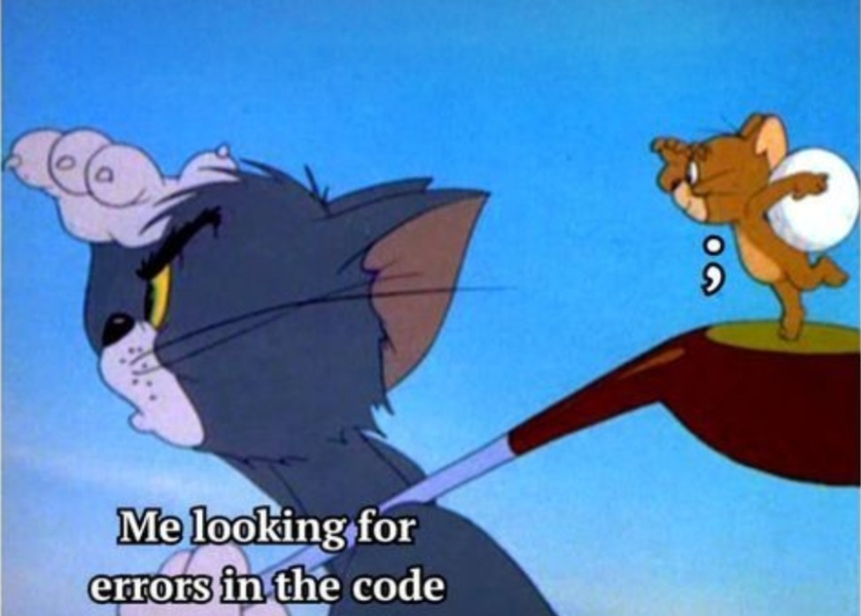

‘500- That’s an error. The server encountered an error and could not complete your request’ Oh not again! Don’t we too, as humans, encounter such unexpected conditions that prevent us from fulfilling our desires? Indeed, we are referring to the mistakes, the errors that we commit knowingly or unknowingly every day. May it be because of ourselves or someone else, don't we feel irritated, disappointed, or embarrassed when we commit an error, silly or grave?
Every day, from savouring morning tea to indulging in evening snacks, we face challenges that create unexpected hurdles, just like the basic syntactical errors that create a technical snag. For instance, the semicolon, although little, is one of the most significant punctuations that has the power to either terminate a line or the entire program. But does the fear of missing out on these semicolons stop the programmer from writing the code? No matter what, we have to accept the errors, try to overcome them, and move ahead in life. Without semicolons, there is no code, without errors, no life!

Hasn’t each one of us faced a situation where we have mistakenly used another punctuation, word, or expression instead of the right one?
Consider this:
A woman, without her man, is nothing!
A woman, without her, man is nothing!
The misplaced punctuations and expressions can cause huge misunderstandings, portray ill intentions, or interrupt the stability of a relationship. Wielding our words carefully ensures that our lines of communication remain clear and errorless.
We make minute errors every now and then - be it wrongly reading a question in an exam paper, forgetting to carry your house keys while leaving your house and getting locked outside, mistakenly addressing an acquaintance with someone else's name, or forgetting a loved one’s birthday. A more modern version of the Error 500 is forgetting to turn on the switch while charging the phone. Recently, I found myself caught in a similar situation, I forgot to charge my phone and it caused me a headache. Throughout the morning rush, I struggled to keep up with messages from professors, access important study material and wasn't able to call my parents. All this because I neglected a simple task. Indeed, taking care of even the smallest responsibilities avoids unnecessary disruptions in daily life.
It still seems fine to commit such errors in front of ourselves, but what about when it comes to saving our face after a public show of erroneousness? Picture this: you're all set with an amazing idea, driven with clarity and founded with purpose. Yet suddenly when the spotlight is on you, words evaporate like mist in the sunlight and the mind goes dark like a moonless night. We've all been there - the struggle of not being able to speak at the right time, only to find ourselves stumbling over words or saying entirely different things that might later leave us frightened. These publicly committed errors teach us things that no book contains; don't let those missed opportunities dishearten you, use them as a chance to refill your confidence.

How we look at things matters a lot. One day, Radha came up with a nice idea for a painting. She was very excited and got her paraphernalia ready in no time. With all the stationery in place, she began to create her masterpiece. She had not completed her first stroke when her brother crashed into her in his toy car. Alas! This made the mug of water empty itself on her unpainted masterpiece. After this nuisance, Radha could have taken revenge as most of us might expect her to do. But, she didn't. Instead, she looked at her drawing paper, thought for a while, and started painting again, this time a new picture, with a new idea, taking inspiration from the spilt water! Pouring the colours on the paper, one after the other, just as the water had spilt, she created a beautiful abstract! She didn’t let the situation dishearten her, instead, she focused on putting things in place again.
But as they say, even the off-notes contribute to a beautiful melody. History is a witness to how mistakes can turn out to be blessings in disguise. The story of how Dr Alexander Fleming's momentary oversight turned into the transformative discovery of the famous Penicillin is one of the most impactful Error 500s to have occurred. In 1982, he returned from a holiday to find mould growing on a Petri dish of the Staphylococcus bacteria. He noticed that the mould seemed to prevent the bacteria around it from growing. He soon identified that the mould produced a self-defence chemical that could kill bacteria. It was his error to have turned a blind eye to the Staphylococcus culture plate before leaving for the vacation, which in turn, led to a great discovery!

Having glanced at what happened in the past, let's have a look at the present. Have you ever
found yourself missing out on significant opportunities because you were too focused on
chasing perfection? Imagine a highly skilled individual with excellent coding and soft
skills waiting for a dream company and losing numerous other job opportunities offering
impressive packages and ending up getting none! Ah! A bird in hand is better than two in the
bush! A reminder, that life's richest opportunities may not
always come wrapped in our preferred packaging so don't believe in making the right
decisions, take decisions and make them right!
True that, our mistakes are the lessons that shape our journey, reminding us that it's not
the end but a new beginning. Mistakes are proof that you're trying, in a world full of the
ones lying. The constant human need to be perfect and errorless is certainly valid. But the
little mistakes we make and the errors we create truly enhance the beauty of living. Well,
life won't be thrilling if it isn't a roller coaster ride. After all, to err is human!
Mistakes are debatably the most intriguing things that make us human. Without committing mistakes, there's no learning; without
learning, there's no living. The funny thing about mistakes- we can't undo them. So
let's keep making errrors, oops, errors* and assuring ourselves our existence as the most
erroneous being on this planet!